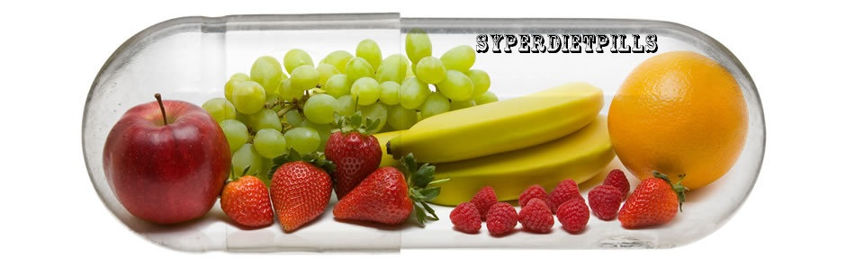

Вы в поиске крайне эффективных таблеток для похудения?
Тогда Вы обратились по адресу!
Представляем вам 5 совершенно новых препаратов для снижения веса, которые на сегодняшний день не имеют аналогов в России! Эффективность данных препаратов подтверждает более чем семилетний опыт работы нашей компании в этом бизнесе.
Хотите убедиться, что действие наших таблеток для похудения гораздо эффективнее других?
Проведя исследования и опираясь на самые высокие рейтинги об эффективности действия различных таблеток для похудения, на нашем сайте мы представили полное описание наиболее популярных и эффективных таблеток для похудения. Главным критерием для отбора является природное происхождение компонентов, входящих в состав препаратов. Благодаря проведенной работе, Вы сможете с легкостью найти наиболее подходящий и соответствующий Вашим требованиям продукт.
Приведем 10 причин приобрести таблетки для похудения именно у нас:
- 100% оригинальные
- быстрый эффект и достижение результата
- только высококачественные ингредиенты
- полная безопасность продукции
- закрепление результатов на долгое время
- отзывы и комментарии наших клиентов
- репутация компании
- гарантия возврата денег
- выбор продукта в соответствии с рейтингами и исследованиями
- доступная цена при покупке более двух единиц товара.
Предлагаем вашему вниманию
5 самых эффективных таблеток для похудения!
№1
Lipofuze
Рейтинг таблеток 4.9/5.0
Lipofuze
60 капсул
3000 рублей — 1 упаковка
4300 рублей — 2 упаковки
5800 рублей — 3 упаковки
4300 рублей — 2 упаковки
5800 рублей — 3 упаковки
LipoFuze - один из наиболее востребованных препаратов у потребителей и первый в рейтинге у экспертов. LipoFuze содержит в себе только натуральные вещества и ингредиенты, которые помогают вам избавиться от лишнего веса и надолго сохранить полученный результат.
№2
Fexotropin
Рейтинг таблеток 4.8/5.0
Fexotropin
60 капсул
3300 рублей — 1 упаковка
4800 рублей — 2 упаковки
6300 рублей — 3 упаковки
4800 рублей — 2 упаковки
6300 рублей — 3 упаковки
Fexotropin - это средство является мощным помощником в борьбе с лишним весом в процессе диеты. Fexotropin содержит натуральные и мощные ингредиенты, которые повышают обмен веществ в организме, тем самым способствуя интенсивному снижению веса. Результаты будут видны с каждым взвешиванием. А любимая старая одежда окажется как раз в пору!
№3
Lipovox
Рейтинг таблеток 4.7/5.0
Lipovox
60 капсул
2400 рублей — 1 упаковка
3000 рублей — 2 упаковки
3600 рублей — 3 упаковки
3000 рублей — 2 упаковки
3600 рублей — 3 упаковки
Lipovox является очень эффективным средством, способствующим снижению веса и улучшающим общее состояние здоровья.
№4
Oxy Select Pink
Рейтинг таблеток 4.6/5.0
Oxy Select Pink
60 капсул
3000 рублей — 1 упаковка
3900 рублей — 2 упаковки
4500 рублей — 3 упаковки
3900 рублей — 2 упаковки
4500 рублей — 3 упаковки
Oxy Select Pink является интенсивным средством для похудения, разработанным специально для женского организма. Хотите похудеть, но у Вас весьма насыщенный ритм жизни и не хватает времени, чтобы попасть в спортзал?
№5
Lipoclen
Рейтинг таблеток 4.5/5.0
Lepoclen
120 капсул
2500 рублей — 1 упаковка
3500 рублей — 2 упаковки
5000 рублей — 3 упаковки
3500 рублей — 2 упаковки
5000 рублей — 3 упаковки
Lipoclen - прекрасное средство, которое одновременно очищает кишечник от шлаков и токсинов, а так же поддерживает общее состояние здоровья.
Отзывы покупателей о нашей продукции:
Я уже принимаю Lipofuze неделю, и так же стараюсь поддерживать диету, ем все, но понемногу. В результате похудела на 1.5 кг и для меня это хороший результат! Кушать не особо хочется, посмотрим, что будет через месяц) Вес был 70 кг, стремлюсь к 55 кг!
Принимаю Fexotropin практически месяц. Очень довольна, хорошая помощь при похудении, всем рекомендую!!! До этого пробовала различные препараты и таблетки, но желаемого эффекта не получала. Заказала здесь курс на 3 месяца! Результаты не заставили долго ждать – за месяц минус 8 кг! Естественно, продолжаю курс и настроена на достижение задуманного результата!
После родов никак не могла сбросить, как ни старалась, даже и четырех кг. Начала пить Lipofuze, скинула 12 кг и это всего за полтора месяца. При этом я не ем мучные изделия и сладости и не испытываю такого желания. Очень довольна этим эффективным средством для похудания. Побочных эффектов никаких не наблюдаю!
Привет всем! Мой рост – 163, всегда весила до 60 кг... но почему-то за 3 месяца набрала вес и сейчас ужасная цифра – 71 кг... Начала принимать таблетки для похудения Oxy Select Pink и стала приходить в норму)) уже минус 4 кг! Спасибо вашему сайту за подробно изложенную информацию, которая помогла мне сделать правильный выбор!
Я пропила месячный курс Lipoclen , ооочень понравилось, похудела на 5 кг! Никаких побочных эффектов, единственное – пила много воды, кушать старалась умеренно, решила еще месяца 2 попить, чтобы закрепить результат, всем советую!!!
Пью пятый день LipoFuze, хотя у меня вес вроде бы и в норме, но мне кажется, что нет(( Я решила все-таки продолжить принимать, так как взвесилась и за три дня приёма ушло 1.9 кг, что меня сильно обрадовало! Аппетит уменьшился, не хочется есть сладостей, например. Спокойно наблюдаю за теми, кто ест, а меня даже не тянет на перекусы «за компанию». Шеф угостил в пятницу шоколадкой, так она так и лежит не тронутой на столе))) мне много не надо сбрасывать, килограмм бы 5-7, так что очень надеюсь на результат. По-моему, это неплохое начало)))
Принимала Fexotropin в течение месяца. Результат – похудела на 6 килограмм) В первую неделю вообще ничего не происходило, и я уже думала бросить. Но со второй недели процесс пошел)) Животик стал плоским и немного уменьшился, возвращаюсь в бывшие объемы одежды... Буду пить дальше – надоело стесняться своего тела и маскировать недостатки под одеждой! ;-)
У меня масса эмоций! Мне удалось похудеть и достигнуть желаемых результатов за короткий срок! За 2 месяца до нового года я поставила себе цель похудеть на 12 кг. Мы с мужем планировали путешествие в Мексику на новогодние праздники, поэтому требовалось срочно привести фигуру в порядок. И я поделилась своими планами с подругой, которая живет в Штатах. Именно она посоветовала мне попробовать новые таблетки для похудения LipoFuze, сказав, что самой недавно пришлось пройти ту же самую процедуру, и что результат ее очень порадовал. Посоветовавшись с диетологом и составив план питания на период моего похудения, я так же решила заказать двухмесячный курс таблеток для похудения LipoFuze. Получила посылку примерно через 10 дней. Я заметила результат уже на третий день после приема - минус 2 на весах. Продолжала принимать LipoFuze в течение двух месяцев, конечно придерживаясь плана питания и физических нагрузок. Но для меня все это не составляло труда, потому что этот препарат в действительности заряжал меня энергией в течение всего дня, и у меня абсолютно не было чувства голода! Уже поблагодарила подругу, и еще хочу сказать отдельное спасибо сотрудникам «SyperDietPills» за ваши препараты и за предоставленную полезную информацию!
После того как я перестал заниматься спортом, я набрал лишние 17 килограмм. Времени на посещение спортзала у меня не было, и я решил попробовать таблетки для похудения. Перечитал множество статей, просмотрел многие сайты, но остановился именно на этом. После чего сразу позвонил в службу поддержки и проконсультировался по имеющимся препаратам. Начал я с очищения организма таблетками Lipoclen, результат не заставил себя ждать и уже после первой недели применения я потерял 6 килограмм. Сейчас принимаю Fexotropin и уже нахожусь в зоне положительного эффекта!
Несколько месяцев назад я приобрела таблетки для похудения Lipovox, т.к. мне понравились ингредиенты, входящие в состав этих таблеток для похудения, а так же невысокая цена препарата. Мне необходимо было срочно сбросить 8 кг. Результат меня порадовал сразу. А достигла я его всего за полтора месяца! Причем без особых усилий! Я не сильно ограничивала себя в еде, но, тем не менее, потеряла 8 кг и 13 см в талии... причем результат до сих пор сохраняется! Совершенно согласна в том, что Lipovox подходит тем, кому необходимо достичь быстрых результатов. Проверила на себе, рекомендую всем))